DASHBOARD PAGES
STEP 1:
SESSION
FILTER
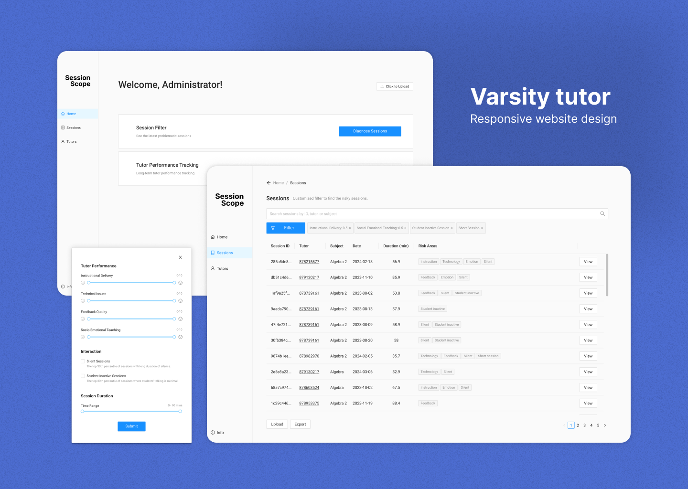
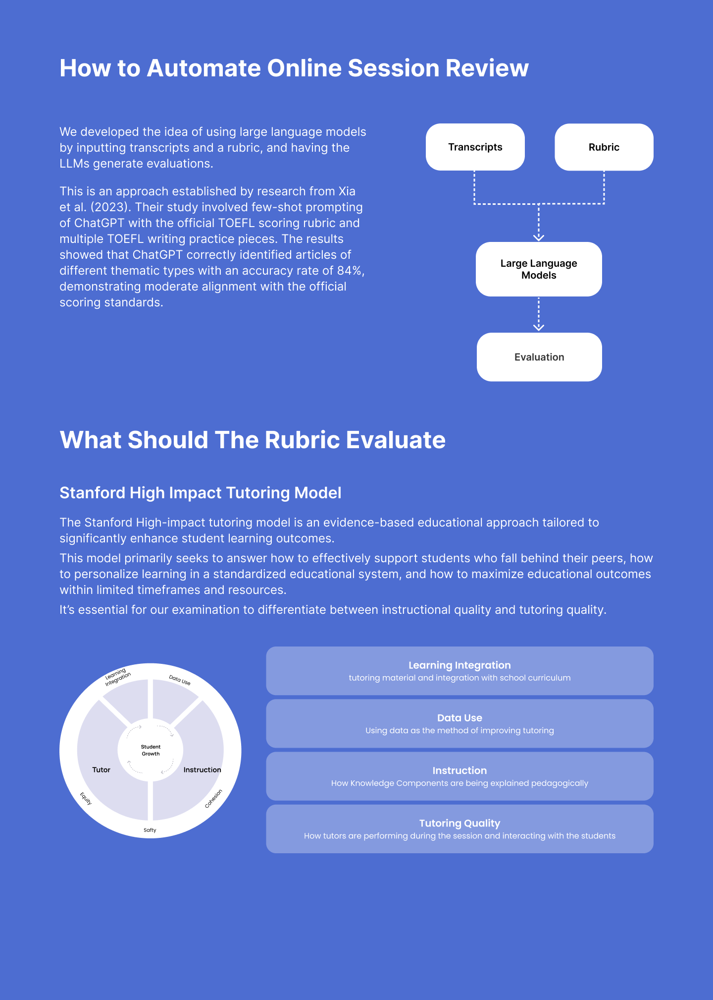
1. Limited Control Over Tutors
Varsity Tutors has limited control over contracted tutorswhich currently results in a review rubric that primarilyfocuses on basic behavior detection.
4. Needs To ldentify Poor Sessions And Where The Errors Occur
The review team prioritizes the rapid identification ofpoor-quality sessions and the specific segments whereerrors occur. A feature that allows the assessment ofsessions aligned with video progress would be particularlybeneficial to their workflow.
2. Lack Of Effective Rubric Indicators
The rubric the review team is currently using lacks indicatorsof effective tutoring strategies or insights into studentlearning outcomes.
5. ldentify Level Of Defects Of TutorPerformance
The level of defects in tutoring sessions is their mostsiqnificant concern.Mediocre tutoring happens and onesolution is to send general feedback and suggestions totutors to enhance tutor performance.
3. Limited Review Ability & Heavy Workload
Resource constraints siqnificantly limit the review team'sability to cover the session review workload, with less than 2%of sessions being reviewed and the vast majority remainingunchecked.
6.Cumulative Data For Long-TermVeasurement
The review team requires cumulative data for specifictutors in the dashboard desiqn for long-term evaluation.
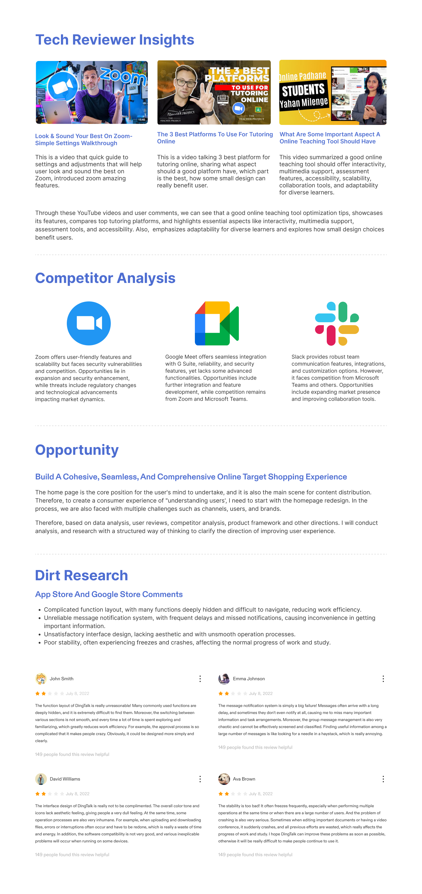
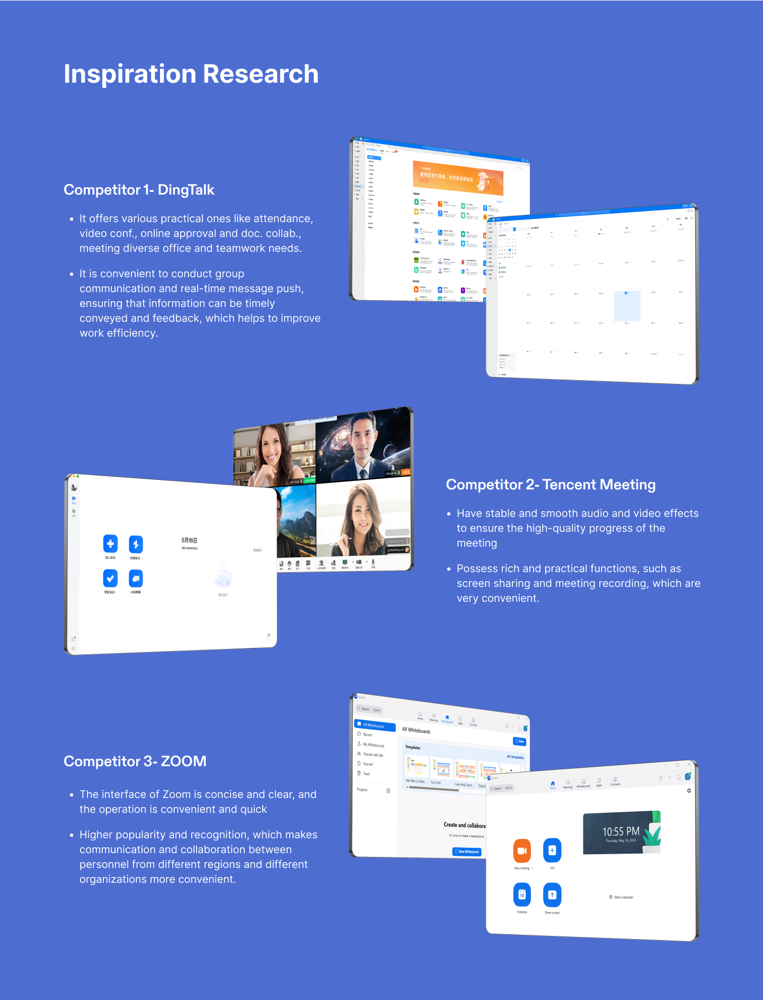
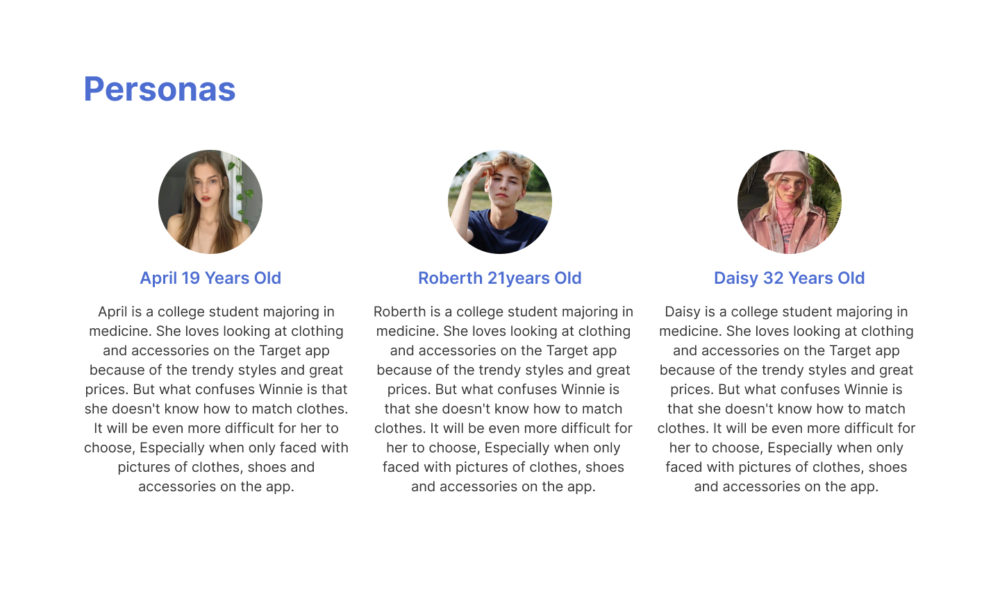
ldeation
By Analyzing The Perspectives Of The Stakeholders And Thinking From Four Temporal Dimensions: Before, During,After, And Long-Term Of The Tutoring Sessions, We Have Conducted Multiple Rounds Of Brainstorming On TheProject's Objectives.
(the platform)
better match students
with ideal tutors
emergencies
effectiveness
boost student
satisfaction and lower
churn
better prepare for a
session
performance
Improve tutoring quality
find the best suitable
tutor
learning experience；
be engaged in thesession
effectiveness
improve learning
outcomes
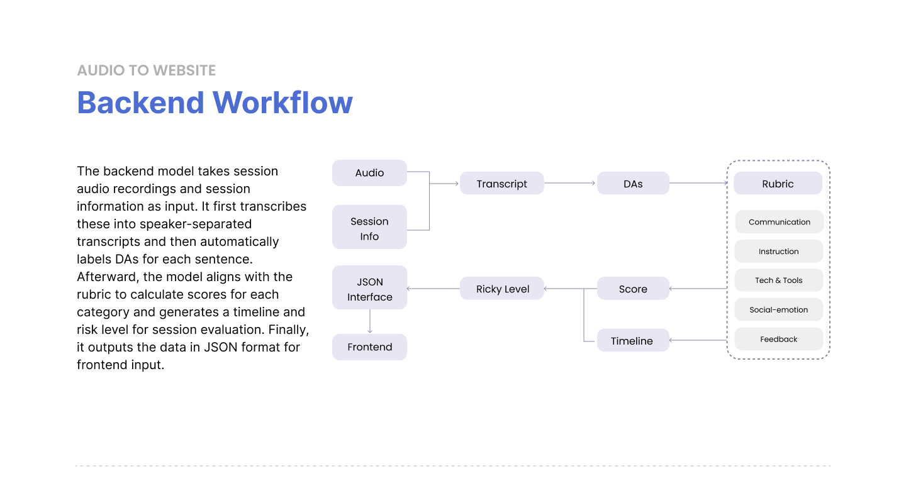
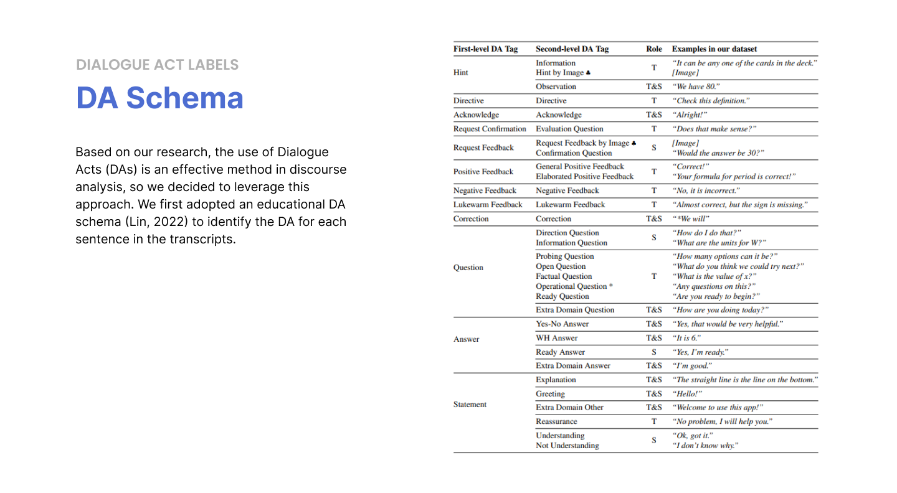
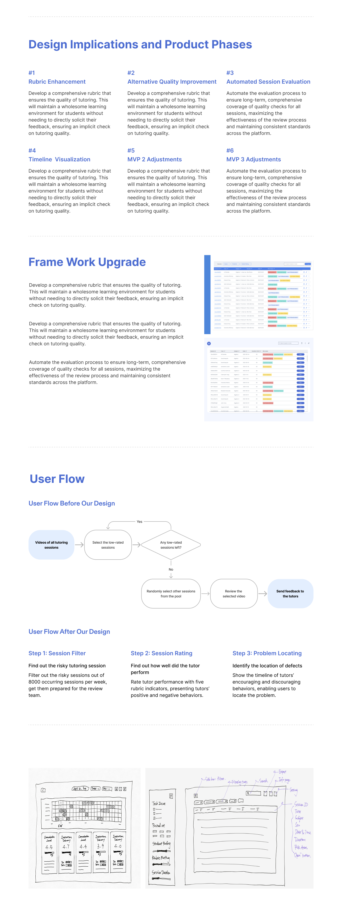
Filter
The filter button allows users to customize their selection by filtering out risky sessions.
Basic session info
The first five columns provide basic information about eachsession as an overview.
“View" detail ratings
The "View' button in the last column allows users to navigate toa second page to view detailed evaluations of each session.
Labels of risky areas
We labeled each session in the sixth column, tagging it with anyrisky areas it may involve. These specific labels align with thefilter options, which include technical issues, low rubric ratingsand short sessions.
DASHBOARD PAGES
STEP 1:
SESSION
FILTER
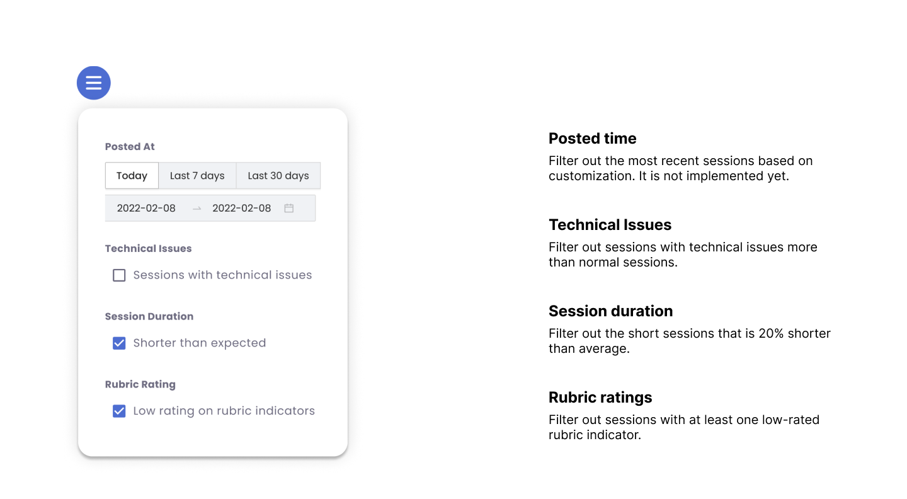
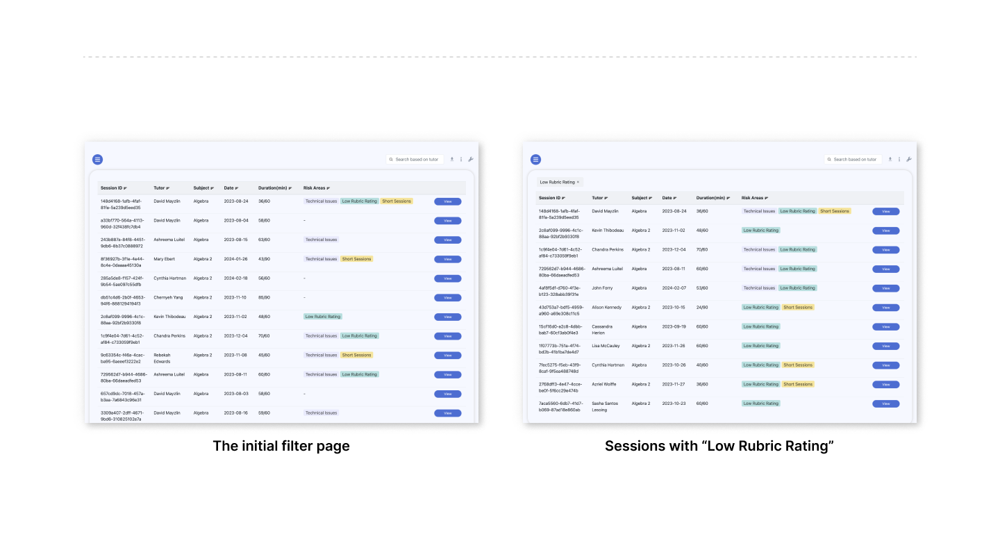
Basic session info
Introducing information including posted time, tutor name, andsession lD
Table tools
Basic table editing tools including download, info, and settings.
Rubric rating
Rating scores and percentage of five rubric indicators:communication level, instruction delivery, tech & tool usage, socio-emotional teaching, and feedback.
Defect timeline
Deconstruct each session into 20 time slots, and show the locationand severity of performance defects with three normalized levels.
DASHBOARD PAGESSTEP
STEP 2:
SESSION
RATING
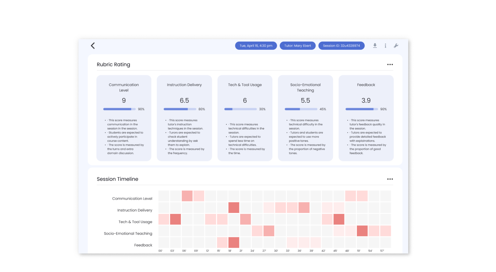
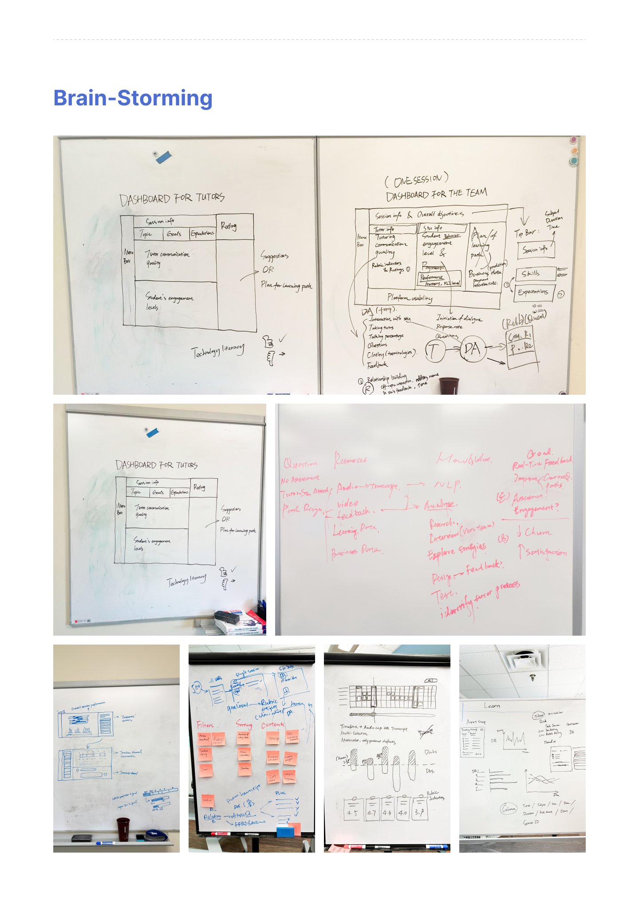
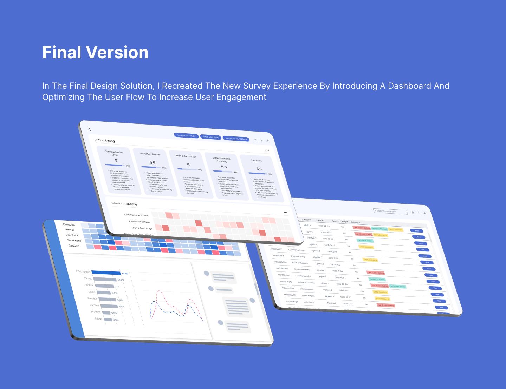
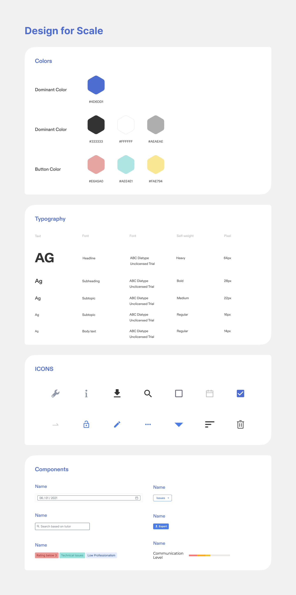